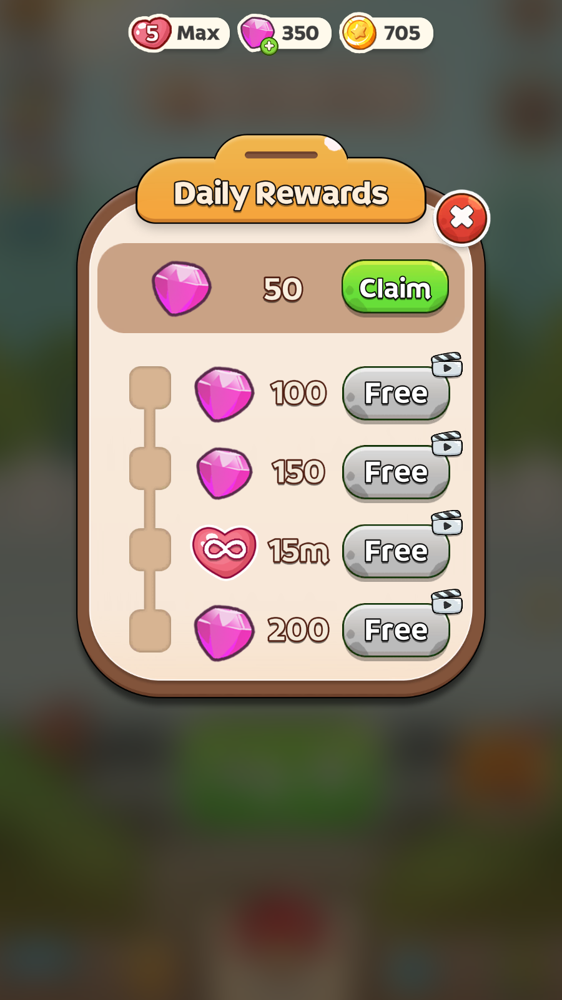
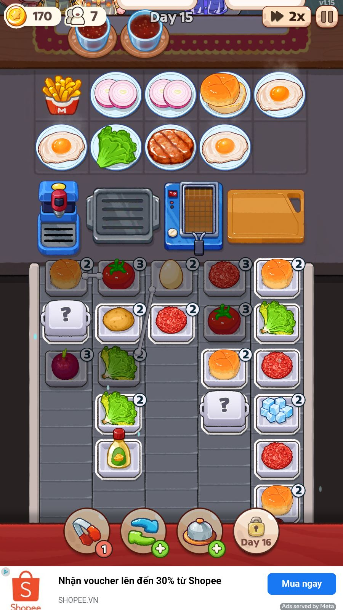
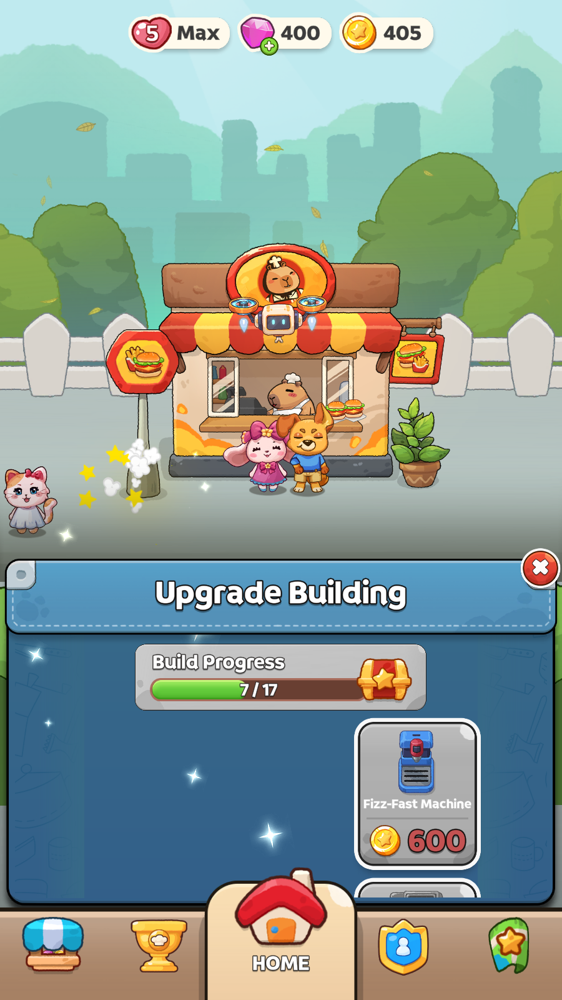

Luồng sale & event (cơ bản)
Foodie Pop! 1.15 kiếm tiền từ đâu, bán gì vào lúc nào, và sự kiện mở theo lộ trình nào: tất cả trên một trang.
Bài tổng quan về kinh tế, các lớp bán hàng, phễu một buổi chơi thật (16/11/2026, Day 13 → Hard Day 20) và vòng đời sự kiện. Đọc khoảng 10 phút. Muốn xem công thức và từng điểm bán thì đọc Sale & event: phân tích sâu; danh mục 28 gói IAP ở Luồng IAP; quảng cáo và phân nhóm người chơi ở Quảng cáo & phân nhóm.
- ✅ Giá trị thật: lấy thẳng từ code, config server thật, save hoặc ảnh chụp khi chơi.
- 🧪 Ví dụ minh họa: con số đầu vào giả định để thấy cơ chế chạy; cách tính trong ví dụ là cách tính thật trong code.
- Tên kỹ thuật (class, method, key) để trong ngoặc hoặc ở dòng bằng chứng, để tra code khi cần.
Tóm tắt nhanh
- Gem là cái van của cả game. Coin chỉ dùng để nâng cấp quán và không bán bằng tiền thật. Mọi nút cứu, tim, booster, tăng tốc đều trả bằng gem.Ví dụ ✅ Thua Day 15 → popup Out of Slots đòi 900 gem. Thắng một màn thường chỉ được 20 gem, nên một lần cứu bằng 45 màn thắng.
- Người chơi bắt đầu dư dả và tiếp tục được cho gem. 900 gem tặng lần đầu, 20 / 60 / 100 gem mỗi màn thắng theo độ khó, Daily Rewards tới 500 gem/ngày nếu xem 4 quảng cáo.Ví dụ ✅ Phiên 16/11: 8 màn, gem 350 → 620, không tiêu đồng nào; coin thì chảy ra 2 600 cho 4 món nâng cấp.
- Năm lớp bán hàng. Shop luôn có; offer theo mốc (No Ads Day 10, Starter Day 20); offer theo lịch (Event Sale Halloween, flash sale đang tắt); điểm bán trong màn (cứu màn, booster hết, tăng tốc, tim); quảng cáo thưởng.Ví dụ ✅ Day 20: nút quà hồng mới trên Home mở STARTER PACK 4,99 $ = 2 000 gem + 4 booster x2 + tim vô hạn 1 giờ.
- Quảng cáo xen kẽ là nguồn thu đều nhất ở đầu game. Profile mặc định (BLD): inter từ Day 15, cách nhau ít nhất 180 giây, kèm popup Remove Ads 8,99 $ sau inter đầu tiên của mỗi phiên.Ví dụ ✅ Day 15–19: mỗi màn thắng một inter, 5 inter trong 28 phút (20:37 → 21:04). 2 trong 5 quảng cáo playable không có nút X.
- Thắng thì được trả lại tim, thua mới mất tim. Áp lực tim chỉ đè lên người đang thua, đúng nơi đặt gói cứu.Ví dụ ✅ Day 15: thua 3 lần + thoát 1 lần, tim 5 → 1. Popup More Lives: +1 tim bằng quảng cáo hoặc đầy tim 800 gem.
- Sự kiện mở muộn theo một lộ trình cố định. Weekly Contest Day 10, Stage Race 26 (không chạy ở 1.15 — không có trong
R1Features.ReleasedEvents), Dreamy Pass 35, Dreamy Streak 41, Team Treasure 51, Dreamy Tower 61.Ví dụ ✅ Day 13–20 chỉ thấy Weekly Contest (nhóm 10 người, top 3 có thưởng). Người chơi lên hạng 4 với 11 điểm sau 7 màn thắng. - Gần như mọi con số do client giữ. Server live 16/11 chỉ ghi đè 17 key (mạng quảng cáo, league, dữ liệu level), không key kinh tế nào.Ví dụ ✅ Giá cứu màn, booster, tim, tăng tốc đang chạy đúng bằng mặc định trong APK (
save_me_config,booster_config,heart_config,speed_up_configkhông có trên server).
Ví dụ xuyên suốt: phễu một buổi chơi thật, Day 13 → Hard Day 20 (16/11/2026)
✅ Tài khoản thử trên MuMu, bản 1.15, giờ máy (+07). Đầu phiên: Day 13, 5 tim, 350 gem, 705 coin, Tongs 1, Swap Row 1, Build 6/17. Chưa từng mua IAP (nhóm chi tiêu NP). Profile quảng cáo suy ra là BLD (mặc định) vì mọi hành vi khớp BLD. Người chơi không mua gì và không bấm nút quảng cáo tự nguyện.
| Lúc | Day | Chuyện gì xảy ra | Số dư / ý nghĩa |
|---|---|---|---|
| 19:43 | 13 | Vào Home: không popup nào tự bật. Mở Daily Rewards: ô miễn phí 50 gem; 4 ô sau (100 gem, 150 gem, tim vô hạn 15 phút, 200 gem) mỗi ô đòi 1 video. Mở Daily Gift: nhận ngày 2 = Tongs x1. | Gem 350 → 400. Quà ngày là cửa đầu tiên mời xem quảng cáo thưởng. |
| 19:45–19:47 | 13 | Mua Pole Sign 300 coin. Mở Shop: 13 thẻ, từ No Ads Bundle 11,99 $ tới Legendary Chef 99,99 $; không có gói coin, không có gói tim. | Coin 705 → 405. Shop chỉ bán gem + booster + tim vô hạn. |
| 19:49–19:57 | 13 | Chơi và thắng. Banner quảng cáo ở đáy màn từ đầu. Màn thắng chỉ có một nút: +20 gem. Không có inter. | Gem 420, coin 780. Banner chạy vì đã thắng ≥ 11 màn. |
| 19:57–20:01 | 14 | Mua Fizz-Fast Machine 600 coin (dụng cụ chạy nhanh hơn). Thắng, +20 gem, vẫn không có inter. | Gem 440, coin 425. |
| 20:01–20:23 | 15 Super Hard | Thua 3 lần vì Out of Slots và 1 lần tưởng kẹt nên thoát. Mỗi lần thua: popup “Move all ingredients into a bag?” 900 gem + thẻ Fail Offer 5,99 $ (2 700 gem + 4 booster). | Tim 5 → 1. Có 440 gem nên không cứu được: điểm bán mạnh nhất hiện 3 lần trong 20 phút (lần thứ 3 không có popup vì còn nước đi, người chơi tưởng kẹt). |
| 20:24 | 15 | Về Home, bấm dấu + cạnh tim: More Lives, “+1 heart FREE” (video) hoặc “Full 800 gems”. Không mua, vào lại với 1 tim. | Tim là cổng bán thứ hai, ngay sau cứu màn. |
| 20:37 | 15 | Thắng lần 5 (dùng Tongs lấy món ở sâu). Nút “100” là thưởng thắng Super Hard. Bấm xong: inter đầu tiên (Mintegral) rồi về Home, popup Remove Ads 8,99 $. | Gem 540, coin 940. Inter bắt đầu đúng mốc Day 15 của profile BLD. |
| 20:38–20:46 | 16 | Mua Crispy Fryer 700 coin. Day 16 mở booster Stack Box: tặng x2 + hướng dẫn ép dùng thử. Thắng → +20 gem → inter AppLovin playable không có nút X → phải tắt app. | Gem 560. Quảng cáo kẹt là rủi ro mất người chơi. |
| 20:46–20:53 | 17 | Mở lại app, tiến độ còn nguyên. Thắng → inter Mintegral (đóng được) → về Home: popup Remove Ads lần 2 (vì đây là inter đầu của phiên mới). | Gem 580, coin 965. |
| 20:58 | 18 | Thắng → inter Unity Ads, bỏ qua được sau khoảng 12 giây. Không có popup Remove Ads. | Gem 600, coin 1 410. |
| 21:04 | 19 | Thắng → inter AppLovin playable, hơn 60 giây không có X → tắt app lần 2. | Gem 620, coin 1 600. |
| 21:06 | 20 Hard | Home có nút quà hồng mới (dấu !): STARTER PACK 4,99 $, nhãn Best Seller. Đóng. | Offer cho người chưa từng mua chỉ đến ở Day 20. |
| 21:12 | 20 | Thua Hard Day 20: Out of Slots 900 gem (đang có 620) + Fail Offer. Đóng → mất tim. Tab Cúp: Weekly Contest hạng 4, 11 điểm. | Tim 3 → 2. |
| 21:13–21:17 | 20 | Chơi lại, thoát giữa chừng (“Quit Day? You will lose 1 heart!”). Mua Bigger House 1 000 coin. | Cuối phiên: 1 tim, 620 gem, 600 coin, Build 10/17. |
Trong 95 phút người chơi gặp 4 lần đòi 900 gem, 4 lần Fail Offer, 5 inter, 2 popup Remove Ads, 1 Starter Pack và 1 lần More Lives, nhưng chưa lần nào đủ gem để cứu màn. Doanh thu thật của buổi này chỉ đến từ quảng cáo.




Ảnh chụp minh họa (5)
Ảnh chụp từ game thật. Bấm ảnh để phóng to, phím ← → để chuyển ảnh.

Luồng hoạt động (8 bước)
Tóm lại: vào màn (giữ 1 tim) → kẹt: booster bằng gem / video → thua: cứu 900 gem hoặc Fail Offer → thắng: coin + 20 gem + inter → Home: nâng cấp bằng coin, popup offer → hết tim: More Lives → thiếu gem: Shop
- 1Vào mànPlayerBấm nút Day. Game giữ 1 tim; đang có tim vô hạn thì không giữ. Màn khó đổi màu nút (tím Hard, đỏ Super Hard).Ví dụ ✅ 20:01 Day 15: nút đỏ “Super Hard”, banner “SUPER HARD DAY!”, tim 5 (1 đang giữ).
HeartSystemController.UseOneHeart
Vào màn - 2Kẹt giữa màn: boosterPlayer4 booster mở dần (Day 3 / 9 / 12 / 16). Còn trong kho thì dùng ngay; hết thì nút “+” mời mua bằng gem, mua gói x3 hoặc xem video.Ví dụ ✅ Day 15 lần 5: Tongs 2 → 1, lấy được món ở sâu và thắng. 🧪 Hết Tongs: mua lẻ 600 gem hoặc gói 3 cái 1 600 gem.
UIInLevelCakeOrder.ShowPopupBooster; booster_config
Kẹt giữa màn: booster - 3Sắp thua: cứu mànClientLưới chuẩn bị đầy và không còn nước đi → popup cứu. Giá gem tăng theo số lần cứu trong cùng màn; ngay dưới là gói IAP Fail Offer.Ví dụ ✅ Day 15 và Day 20: 900 gem + Fail Offer 5,99 $ (2 700 gem + 4 booster x1). Đóng popup = thua.
LevelSaveMeControl.ShowSaveMe; UIOfferPackInGame.ShowOfferSắp thua: cứu màn - 4Thắng: nhận thưởngClientCoin khách trả trong màn + gem theo độ khó (20 / 60 / 100), tim được trả lại. Màn thắng chỉ có một nút nhận.Ví dụ ✅ Day 15 Super Hard: +515 coin, nút 100 gem (440 → 540). Day 13 thường: +375 coin, +20 gem.
UIEndGameWin.OnClickNext; reward_config.rwWinByDifficulty
Thắng: nhận thưởng - 5Sau nút nhận: quảng cáo xen kẽClientTừ Day 15 (profile BLD) mỗi lần bấm nút nhận có thể chạy một inter, nếu đã qua 180 giây kể từ inter trước và trong phiên chưa mua IAP.Ví dụ ✅ 20:37:07 bấm nút 100 → 20:37:08 bộ đếm inter của module Segment ghi inter thứ nhất.
LevelPlayLoadAndSetupControl.ShowInterOnLeaveEndGame; AdsManager.IsPassInterRules
Sau nút nhận: quảng cáo xen kẽ - 6Về Home: tiêu coin, gặp offerClientTừ Day 8 luôn về Home. Hàng đợi popup chạy tuần tự (what's new → nhắc cập nhật → hướng dẫn → Daily Gift lần đầu → Remove Ads → hỏi đánh giá). Rương Build Progress là chỗ tiêu coin.Ví dụ ✅ Day 20: mua Bigger House 1 000 coin (1 600 → 600), Build 9/17 → 10/17; nút quà hồng Starter Pack xuất hiện.
HomeControllerCookOrder.ShowEntryPopupAfterDelay
Về Home: tiêu coin, gặp offer - 7Hết timPlayerKhông còn tim mà bấm vào màn → More Lives. Tim hồi 1 cái / 30 phút, tối đa 5.Ví dụ ✅ 20:24 còn 1 tim: “+1 heart FREE” (video) hoặc “Full 800 gems”.
UIPopupHeartRefillHết tim - 8Thiếu gem: sang ShopClientBấm nút trả gem khi không đủ → game báo thiếu gem và mở Shop (bản sale gem1_sale có code nhưng đang tắt).Ví dụ 🧪 Có 620 gem, bấm cứu 900 gem → Shop mở; gói rẻ nhất 1 000 gem = 1,99 $.
InAppShopDataAccess.NotifyGemShortage; ShopOfferRules.OpenGemShortageSales

Nhánh & ngoại lệ
| Khi | Thì | Ví dụ | Bằng chứng |
|---|---|---|---|
| Người chơi thắng liên tục | Không mất tim, gem tăng đều, gần như chỉ gặp inter và popup Remove Ads. | ✅ Day 16–19: 4 màn thắng liền, gem 540 → 620, không thấy điểm bán nào trong màn. | |
| Người chơi thua nhiều ở màn khó | Gặp cứu màn + Fail Offer mỗi lần thua, rồi More Lives khi tim cạn; module Segment xếp vào nhóm Struggling sau 3 lần thua liên tiếp. | ✅ 20:23:43 lần thua thứ 3 của Day 15 → trục kỹ năng đổi normal → struggling (save R1). | |
| Người chơi mua IAP lần đầu | Starter Pack biến mất (chỉ cho người chưa từng mua), inter bị chặn tới hết phiên (BLD), nhóm chi tiêu đổi từ NP sang T1 trở lên. | 🧪 Mua Starter 4,99 $ lúc 21:06 → các màn thắng sau đó trong phiên không có inter. | ShopOfferRules (HasAnyIap); ads_campaign_bld.isBlockInterAfterIap = 1; SegmentManager.OnBuyPack |
| Người chơi mua No Ads | Tắt inter và banner vĩnh viễn, vẫn giữ quảng cáo thưởng; popup Remove Ads không bật nữa. | 🧪 Mua No Ads 8,99 $ sau popup ở 20:38 → Day 16–19 không còn 4 inter, nút video ở Daily Rewards vẫn hoạt động. | AdsManager.UpdateOnRemoveAds |
| Người chơi tới các mốc sự kiện | Mỗi sự kiện được giới thiệu một lần ở Home (R1HomeFlow) rồi chạy theo chu kỳ riêng (tuần, 3,5 ngày, tháng). | ✅ Tower có sẵn hạn vòng 19/11 12:00 UTC trong save dù người chơi chưa đủ Day 61 để mở. |
1. Kinh tế trên một trang
Tóm lại: chơi màn → coin (nâng cấp quán) + gem nhỏ giọt → gem chỉ tiêu khi kẹt / thua / hết tim → thiếu gem thì mua gói



| Tài nguyên | Lấy ở đâu | Tiêu vào đâu | Game bán thế nào | Ví dụ | Số liệu do |
|---|---|---|---|---|---|
Gem (hard) | 900 tặng lần đầu; thắng màn 20 / 60 / 100; Daily Rewards 50–200 / ô; Daily Gift 50 / 100 / 150; mốc Journey 50; sự kiện; IAP | Cứu màn 900 / 1 800 / 2 400; đầy tim 800; booster 500–700 (gói x3 1 600–1 800); tăng tốc 20 phút 1 200 | 6 gói gem 1,99–99,99 $; gem kèm mọi gói Chef, Starter, Fail Offer, Event Sale | ✅ Day 13–20: 350 → 620 gem, chỉ nhận | Client (RC mặc định), giá $ từ store |
Coin (soft) | Khách trả trong màn (25–55 coin / khách); mốc Journey 100–200; bù coin mốc nhà hàng đầu (+150 dư) | Nâng cấp quán: trang trí, dụng cụ, nhà lớn hơn (300–1 250 coin / món; burger tổng 27 200) | Không bán. Không có gói coin trong Shop | ✅ Day 15 Super Hard: +515 coin; Bigger House 1 000 coin | Đo trên máy + Client |
Tim (live) | Hồi 1 / 30 phút (tối đa 5); thắng được trả lại tim đã giữ; +1 bằng video | Thua hoặc thoát giữa màn mất 1 tim | Đầy tim 800 gem; tim vô hạn 1–24 giờ kèm gói IAP; không có gói tim riêng | ✅ Day 15: 5 → 1 tim sau 3 lần thua + 1 lần thoát | Client (heart_config) |
| Booster (4 loại) | Quà mở khoá x2; Daily Gift; Weekly Contest; gói IAP; thưởng sự kiện | Dùng trong màn (Tongs, Swap Row, Auto Cook, Stack Box) | Mua lẻ 600 / 500 / 600 / 700 gem, gói x3 1 600 / 1 600 / 1 600 / 1 800 gem, hoặc 1 video | ✅ Day 16: popup New Booster tặng Stack Box x2 | Client (booster_config) |
| Quỹ tăng tốc 2x | Tặng 5 phút lần đầu; item thưởng của Pass / Streak | Bật nút 2x trong màn, trừ theo giây thật | Nạp 20 phút = 1 200 gem hoặc 8 phút = 1 video | ✅ Quỹ 300 → 263 giây sau phiên 16/11 | Client (speed_up_config) |
| Tim vô hạn (phút) | Gói IAP 60–1 440 phút; Daily Rewards 15 phút; sự kiện 15–120 phút | Chơi không bị trừ tim | Chỉ đi kèm gói, không bán riêng | ✅ Legendary Chef: 1 440 phút = 24 giờ | Client (iap_shop_config) |
2. Bảng giá gem và gói chính
Tóm lại: gói càng lớn gem / $ càng cao, gói Chef thêm booster + tim vô hạn
✅ Giá chụp trong Shop ngày 16/11 (USD, máy test). Gem / $ là phép chia đơn giản; cột “quy đổi” tính booster theo giá gói x3 trong game (1 bộ 4 booster ≈ 2 200 gem), xem cách tính ở bài Luồng IAP.


| Gói | Giá | Nội dung | Gem / $ | Ví dụ | Số liệu do |
|---|---|---|---|---|---|
| 1 000 gem | 1,99 $ | 1 000 gem | ≈ 503 | Vừa đủ 1 lần cứu màn 900 gem | Store + Client |
| 5 000 gem | 8,99 $ | 5 000 gem | ≈ 556 | 5 lần cứu lần đầu | Store + Client |
| 100 000 gem | 99,99 $ | 100 000 gem | ≈ 1 000 | Gấp đôi tỉ lệ gói nhỏ nhất | Store + Client |
| Starter Pack | 4,99 $ | 2 000 gem + 4 booster x2 + tim vô hạn 1 giờ | ≈ 401 (gem thuần); ≈ 1 283 nếu tính booster | Rẻ nhất mỗi đô nếu tính cả booster; chỉ bán cho người chưa từng mua | Store + Client |
| Fail Offer | 5,99 $ | 2 700 gem + 4 booster x1 | ≈ 451 (gem thuần) | 2 700 gem = đúng 3 lần cứu 900 | Store + Client |
| Legendary Chef | 99,99 $ | 70 000 gem + 4 booster x18 + tim vô hạn 24 giờ | ≈ 700 (gem thuần) | Nhãn Best Value nhưng ít hơn gói 100 000 gem cùng giá 30 000 gem | Store + Client |
3. Năm lớp bán hàng
Tóm lại: luôn có → theo mốc → theo lịch → đúng lúc kẹt → quảng cáo tự nguyện
| Lớp | Gồm những gì | Người chơi gặp khi nào | Ví dụ | Số liệu do |
|---|---|---|---|---|
| A. Luôn có | Shop: No Ads Bundle, No Ads, 5 gói Chef, 6 gói gem (13 thẻ) | Tab Shop (mở Day 3), nút + cạnh gem, khi thiếu gem | ✅ Day 13: cuộn hết Shop, không gói coin, không gói tim | Client (thẻ), store (giá) |
| B. Theo mốc người chơi | No Ads (Day 10), No Ads Bundle (Day 10), Fail Offer (Day 10), Starter Pack (Day 20, chưa từng mua IAP, hiện một kiểu duy nhất) | Đủ Day; nút nổi trên Home; popup sau inter; trong popup cứu | ✅ Day 20: nút quà hồng Starter 4,99 $ lần đầu xuất hiện | Client (ShopOfferRules.asset) |
| C. Theo lịch | Event Sale 4 gói (Halloween 01/10–01/11/2026, từ Day 35); flash sale gem / cứu / Starter / No Ads (code có, đang tắt) | Popup 1 lần / ngày khi về Home + icon đếm ngược | ✅ 16/11 sale đã hết hạn, save halloween2026 = 4 x false | Client mặc định, RC đổi được ngày |
| D. Đúng lúc bị chặn | Cứu màn (3 loại), booster hết, tăng tốc hết quỹ, More Lives, Fail Offer | Ngay khi thao tác thất bại | ✅ Day 15: popup cứu 3 lần trong 20 phút | Client (RC mặc định) |
| E. Quảng cáo thưởng | 6 chỗ: Daily Rewards, +1 tim, cứu màn, booster hết, tăng tốc, nhân gem thắng (tắt ở BLD) | Người chơi tự bấm nút có biểu tượng video | ✅ Daily Rewards: 4 ô video 100 / 150 / tim 15 phút / 200 gem | Client + mạng quảng cáo |
4. Khi bấm mua
Tóm lại: bấm giá → Google Play thanh toán → kiểm biên lai trên máy → cộng gem / booster / tim vô hạn → ghi giao dịch đã giao → popup thưởng
- Không có máy chủ game xác minh biên lai. Client tự kiểm biên lai (
CrossPlatformValidator) rồi cộng quà.Ví dụ ✅ Mỗi giao dịch được ghi khoátx_<id>để không cộng hai lần. - Nội dung gói nằm trong một bảng server đổi được. Mỗi SKU là một dòng
iap_shop_config: gem; 5 cột booster; phút tim vô hạn.Ví dụ ✅ Dòng Starter:starter;2000;2;;2;2;2;60= 2 000 gem, mỗi booster x2, 60 phút. - Mua xong, ba hệ thống khác phản ứng. Offer bị gỡ, inter bị chặn tới hết phiên (BLD), nhóm chi tiêu được tính lại.Ví dụ 🧪 Mua Fail Offer ở Day 15 →
shop.lvLastIap= 15, Segment ghi lý doiap:revivepack, nhóm NP → T1 (mốc USD của T1 chưa đọc được).
5. Lộ trình mở khoá (Day) của các thứ liên quan tiền
Tóm lại: Day 3 Shop → Day 10 offer + Weekly → Day 15 inter → Day 20 Starter → Day 26 Stage Race → Day 35 Pass + Event Sale → Day 41 Streak → Day 51 Team Treasure → Day 61 Tower
| Day | Mở gì | Bán / thưởng gì | Ví dụ | Số liệu do |
|---|---|---|---|---|
| 1 | Daily Rewards, Daily Gift 7 ngày (nút nổi mở từ level 0, suy luận từ LiveOpsButtonUnlockConfig), tim, 900 gem khởi đầu | Video ở Daily Rewards | ✅ Daily Gift ngày 7 = Tongs + Swap + Auto Cook | Client |
| 3 | Shop, booster Tongs, thanh booster | Booster bằng gem / video | ✅ lvUnlockShop = 3 | Client |
| 5 | Level path; màn Hard đầu tiên | Gem thắng 60 | ✅ Burger: 18 màn Hard trên 100 | Client |
| 9 / 12 / 16 | Swap Row / Auto Cook / Stack Box | Booster mới được tặng kèm lúc mở | ✅ Day 16: popup New Booster tặng Stack Box x2 | Client |
| 10 | Weekly Contest, Rank; offer No Ads, No Ads Bundle, Fail Offer | Thẻ Fail Offer 5,99 $ trong popup cứu | ✅ Weekly: nhóm 10 người | Client |
| 11 | Banner trong màn (BLD); hỏi đánh giá ở Home | Banner | ✅ Banner thấy ngay ở Day 13 | Client |
| 15 | Interstitial (BLD); màn Super Hard đầu tiên | Popup Remove Ads sau inter | ✅ Inter đầu lúc 20:37 sau thắng Day 15 | Client |
| 20 | Starter Pack (chưa từng mua IAP) | 4,99 $ | ✅ Nút quà hồng lúc 21:06 | Client |
| 25 / 26 | Team / Stage Race | Thưởng booster, tim vô hạn | ✅ “REACH Day 25 To Join Team!” | Client |
| 30 | Map 2 (Coffee & Bakery) | Bù coin để chạm mốc nâng cấp nhà hàng đầu (+150 dư); mốc nhà hàng thưởng 100 gem | ✅ “Pass day 30 of the previous restaurant to unlock.” | Client |
| 35 | Dreamy Pass (IAP foodiepass), Event Sale (nếu đang trong khung ngày) | Vé Pass, 4 gói sale | ✅ Pass 31 mốc, tổng 977 điểm | Client, RC đổi được mốc |
| 41 / 51 / 61 | Dreamy Streak / Team Treasure / Dreamy Tower | Thưởng gem lớn (Streak 5 000, Tower 1 000 ở đỉnh) | ✅ Banner Home “Unlock on Day 41” (suy luận: là Streak) | Client, RC đổi được mốc |
6. Vòng đời sự kiện
Tóm lại: đủ Day → giới thiệu ở Home một lần → chạy theo chu kỳ (tuần / 3,5 ngày / tháng) → nhận thưởng mốc → hết vòng reset
| Giai đoạn | Chuyện gì xảy ra | Điểm bán / giữ chân | Ví dụ | Số liệu do |
|---|---|---|---|---|
| Có lịch sẵn | Model save được tạo và đặt hạn vòng ngay khi khởi động, kể cả khi chưa mở khoá | Không | ✅ Save Day 20: Tower và Streak đều có endTime 19/11/2026 12:00 UTC | Client |
| Mở khoá | Đủ Day (level_unlock_*, Stage Race cố định 26 nhưng không chạy ở 1.15) | Khoá theo Day tạo mục tiêu chơi tiếp | ✅ Tower mở Day 61 (bản 1.11 là 31) | Client, RC |
| Giới thiệu | R1HomeFlow chờ mọi popup đóng rồi chạy bước giới thiệu từng sự kiện, mỗi cái một lần | Không | ✅ Day 13–20 chưa có bước nào chạy | Client |
| Đang chạy | Thắng màn chính cho điểm / tầng / chuỗi; màn khó cho nhiều điểm hơn (1 / 3 / 5) | Gián tiếp: muốn giữ chuỗi thì phải cứu màn, mua tim | ✅ Weekly: 6 màn thường + 1 Super Hard = 6 + 5 = 11 điểm | Client |
| Thua | Tower rơi về mốc an toàn; Streak mất chuỗi nhưng giữ điểm; thoát app giữa màn bị tính thua | Đúng lúc thua lại có popup cứu 900 gem | 🧪 Đang ở tầng 30 Tower, thua → về tầng 22 | Client |
| Kết thúc vòng | Reset tiến độ (Tower, Streak, Team Treasure 3,5 ngày; Stage Race, Weekly 1 tuần; Pass theo tháng) | Pass trả phí theo tháng | ✅ Tuần Weekly 202647 hết 23/11/2026 00:00 UTC | Client |
7. Các họ sự kiện
| Sự kiện | Mở | Chu kỳ | Tiến độ đến từ | Thưởng lớn nhất | Bán gì | Ví dụ |
|---|---|---|---|---|---|---|
| Weekly Contest | Day 10 | 1 tuần | Thắng màn: 1 / 3 / 5 điểm | Hạng 1: 100 gem + 4 booster + tim vô hạn 60 phút | Gián tiếp | ✅ Người chơi hạng 4 / 10, 11 điểm |
| Stage Race | Day 26 (cố định; không chạy ở 1.15) | 1 tuần, 3 chặng | Thắng 3 / 5 / 7 màn trước 4 bot | Chặng 3: 100 coin + booster + tim vô hạn 60 phút | Gián tiếp | ✅ Bot là đồng hồ: 500–1 500 giây / màn |
| Dreamy Pass | Day 35 | Tháng | Thắng màn: 1 / 3 / 5 điểm, 31 mốc | Free 1 000 gem; Pass 3 500 gem + tim tối đa +8 | IAP foodiepass | ✅ Mốc 25: Free 200 gem, Pass 600 gem |
| Dreamy Streak | Day 41 | 3,5 ngày | Chuỗi thắng (thua mất chuỗi, giữ điểm) | Bước cuối 5 000 gem | Gián tiếp (muốn giữ chuỗi) | ✅ Bảng Colony: 25 bước, 18 661 điểm |
| Team Treasure | Day 51 + có đội | 3,5 ngày | Điểm cả đội 1 / 3 / 5 mỗi màn | Mốc 800: 100 gem + 4 booster + 60 phút | Gián tiếp | ✅ 3 mốc 200 / 500 / 800 |
| Dreamy Tower | Day 61 | 3,5 ngày | Thắng +1 tầng, thua về mốc an toàn | Tầng 65: 1 000 gem + 5 vật phẩm | Gián tiếp | ✅ 66 tầng, tổng 1 850 gem |
| Event Sale | Day 35, trong khung ngày | Theo lịch (Halloween) | Không có tiến độ | Gói 4: 10 000 gem + 24 booster | 4 IAP eventsale1..4 | ✅ Khung mặc định 01/10–01/11/2026 |
8. Nhận xét thiết kế
- Bán đúng khoảnh khắc thua. Popup cứu đặt hai mức giá cạnh nhau: 900 gem và gói 5,99 $ chứa đúng 3 lần cứu.Ví dụ ✅ Fail Offer 2 700 gem = 3 x 900. Người đang có 440 gem chỉ còn đường mua gói.
- Gem nhỏ giọt, giá cứu cao. Thưởng thắng 20 gem so với cứu 900 gem tạo khoảng cách lớn: người chơi tích đủ 900 gem một cách tự nhiên mất hàng chục màn.Ví dụ ✅ 900 gem = 45 màn thường, hoặc 9 màn Super Hard, hoặc 2 ngày xem đủ 4 video Daily Rewards (450–500 gem / ngày).
- Inter là trụ doanh thu ở giai đoạn đầu. Không có cổng thua / thoát (BLD tắt), chỉ sau màn thắng, nhưng nhịp chơi 6–7 phút / màn làm cap 180 giây không bao giờ chặn.Ví dụ ✅ 5 màn thắng liền Day 15–19 → 5 inter.
- Remove Ads bán ngay sau lúc khó chịu nhất. Popup xuất hiện sau inter đầu của mỗi phiên.Ví dụ ✅ 20:38 và 20:53: hai popup Remove Ads 8,99 $, lần hai vì app bị tắt do quảng cáo không có nút X.
- Offer người mới đến muộn. Starter Pack chỉ ở Day 20, sau khi người chơi đã qua màn Super Hard đầu tiên và 5 inter.Ví dụ ✅ Day 15 là lúc người chơi kẹt nhất (4 lần thua) nhưng Starter chưa mở.
- Sự kiện thưởng theo độ khó màn. Weekly, Pass, Team Treasure đều cho 1 / 3 / 5 điểm, nên màn Hard / Super Hard vừa là bức tường vừa là cơ hội.Ví dụ ✅ Day 15 Super Hard cho 5 điểm Weekly, bằng 5 màn thường.
- Thiếu lớp “gói theo sự kiện”. Ngoài Pass và Event Sale theo mùa, các sự kiện không có gói riêng; thưởng chủ yếu là booster và tim vô hạn.Ví dụ ✅ Stage Race chặng 2 chỉ cho 5 gem.
9. Giới hạn dữ liệu
- Phễu ở mục ví dụ là một tài khoản, một buổi (Day 13 → 20). Không có dữ liệu Day 21+, nên Pass, Streak, Tower, Stage Race, Team Treasure, Event Sale chỉ mô tả theo code và asset.
- Giá USD chỉ có cho 15 SKU đã thấy trên máy; giá Event Sale, booster pack, Pass nằm ở store (server, chưa đọc được).
- Remote Config live chỉ có bản fetch 16/11 (17 key). Không biết server có A/B test hay ghi đè key kinh tế ở nhóm người chơi khác không.
- Profile quảng cáo của máy test không đọc trực tiếp được; suy ra BLD vì mọi hành vi khớp BLD (inter từ Day 15, banner từ Day 11, không nút nhân gem, popup Remove Ads sau inter đầu).
Số liệu chính
| Chỉ số | Giá trị | Số liệu do | Nguồn |
|---|---|---|---|
| Gem khởi đầu | 900 | Client | progress_scenario.initHardRw |
| Gem thắng màn thường / Hard / Super Hard | 20 / 60 / 100 | Client | reward_config.rwWinByDifficulty |
| Cứu màn (lần 1 / 2 / 3+ trong một màn) | 900 / 1 800 / 2 400 gem | Client | booster_pack_config.saveMePrices |
| Đầy tim | 800 gem; hồi 1 tim / 1 800 s; tối đa 5 | Client | heart_config |
| Booster lẻ / gói x3 | 600 / 500 / 600 / 700 gem; 1 600 / 1 600 / 1 600 / 1 800 gem | Client | booster_config, booster_pack_config |
| Tăng tốc 2x | 5 phút tặng; 20 phút = 1 200 gem; 8 phút = 1 video | Client | speed_up_config |
| Gói gem | 1 000–100 000 gem, 1,99–99,99 $ | Đo trên máy | Shop 16/11 |
| Starter / Fail Offer / No Ads | 4,99 $ / 5,99 $ / 8,99 $ | Đo trên máy | Ảnh 16/11 |
| Inter (BLD) | từ Day 15, cap 180 s (120 s từ Day 30) | Client | ads_campaign_bld |
| Inter thấy trong phiên | 5 trong 28 phút | Đo trên máy | Save R1 SegmentDbModel.interShows |
| Key RC server ghi đè (16/11) | 17 / 1 174 | Server | frc_activate_20261116.json |
Đánh giá
Thang 1–5 (với tiêu chí rủi ro, 5 = rủi ro cao). Trung bình: 3.0.
| Tiêu chí | Điểm | Nhận xét |
|---|---|---|
| Độ rõ của kinh tế (một tiền doanh thu) | 4/5 | Coin cho tiến độ, gem cho doanh thu, không bán coin / tim lẻ: dễ cân. Ví dụ: mọi nút trả tiền trong màn đều bằng gem. |
| Đặt offer đúng khoảnh khắc | 4/5 | Fail Offer ngay trong popup cứu, Remove Ads ngay sau inter. Trừ Starter Pack đến muộn (Day 20) so với lúc kẹt nhất (Day 15). |
| Giá trị cảm nhận của gói | 3/5 | Starter rất hời, nhưng Legendary Chef “Best Value” ít gem hơn gói 100 000 gem cùng giá, gói Swap Row x3 đắt hơn mua lẻ 3 lần. |
| Cân bằng thu / chi gem | 3/5 | Thu 20 gem / màn, cứu 900 gem: người thua không bao giờ tự cứu được, người thắng không có gì để tiêu. Ví dụ 620 gem cuối phiên vẫn không đủ một lần cứu. |
| Độ phủ LiveOps 20 Day đầu | 2/5 | Chỉ có Weekly Contest; các sự kiện có thưởng gem lớn mở từ Day 35–61. |
| Khả năng chỉnh từ server | 3/5 | Hầu hết giá có key RC, nhưng luật offer (ShopOfferRules.asset), thưởng sự kiện và mốc Stage Race cố định trong client; live 16/11 không dùng key kinh tế nào. |
| Trải nghiệm quảng cáo | 2/5 | 2 / 5 inter là playable không có nút X, phải tắt app. |
- Một tiền doanh thu (gem) cho mọi điểm bán, giá đặt sẵn trong RC.
- Tim giữ-khi-vào / trả-khi-thắng: người giỏi không bị phạt, người thua gặp đúng điểm bán.
- Popup Home có hàng đợi tuần tự, Home gần như trống ở Day 13–20 nên không phiền.
- Sự kiện dùng chung thang điểm 1 / 3 / 5 theo độ khó, dễ hiểu và đẩy người chơi vào màn khó.
- Khoảng cách 20 gem / màn và 900 gem / lần cứu quá lớn; gem tặng tích lại mà không có chỗ tiêu nhỏ.
- Không có lớp offer “thua nhiều lần” hay “quay lại sau khi vắng”, dù module Segment đã đo được Struggling / Returning.
- Event Sale gắn cứng tên sự kiện (
halloween2026) trong save: mỗi mùa sale cần sửa code. - Flash sale (gem1_sale, revivepack_sale, starter_sale, removeads_sale) đã code xong nhưng đều tắt trong asset.
- Playable không có nút X khiến người chơi phải tắt app, mất phiên chơi và có thể gỡ game.
- Người thua liên tục cạn tim nhanh (Day 15: mất 4 tim trong khoảng 20 phút) mà không đủ gem: dễ bỏ game ở màn Super Hard đầu tiên.
- Lưới đầy còn nước đi thì không popup, không gợi ý (Day 15 lần 3): người chơi tưởng kẹt, vừa mất tim vừa mất một điểm bán.
- Đưa Starter Pack về sớm hơn hoặc bật thêm khi người chơi vào nhóm Struggling. 🧪 Ví dụ: mở Starter ở Day 15 cho người đã thua ≥ 2 lần tại màn Super Hard đầu tiên.
- Thêm một chỗ tiêu gem nhỏ cho người thắng đều (ví dụ booster lẻ giảm giá trong ngày) để 600–1 000 gem tích lại có giá trị trước khi gặp bức tường.
- Bật nhánh cứu bằng quảng cáo đã có sẵn trong code (maxAds 99) cho lần cứu đầu của người chưa từng mua, để giữ người chơi ở Day 15.
- Đặt
r1plugin_segment_interlimitcho nhóm NP và chặn creative playable không có nút đóng ở tầng mediation. - Đổi nhãn “Best Value” hoặc tăng gem của Legendary Chef để không thấp hơn gói 100 000 gem cùng giá.
Liên quan
Cửa hàng & IAP Gói ưu đãi (starter, booster pack, remove ads) Tiền tệ: coin & gem Tim (mạng) Cứu màn (Save Me) Booster trong màn Tăng tốc x2 Quảng cáo (rewarded, inter, banner, app open) Phân nhóm người chơi & giới hạn quảng cáo (Segment) Quà hằng ngày (Daily Rewards) Quà đăng nhập 7 ngày (Daily Gift) Màn Home & thứ tự popup Nâng cấp nhà hàng và dụng cụ Luồng màn: vào, thắng, thua Day, map và mở nhà hàng Thi đấu tuần (Weekly Contest) Đua chặng (Stage Race) Foodie Pass (Dreamy Pass) Chuỗi thắng Dreamy (Dreamy Streak / Win Streak) Tháp Dreamy (Dreamy Tower) Kho báu đội (Team Treasure) Sale sự kiện (Event Sale, Halloween 2026) 📊 Sale & event: phân tích sâu 📊 Luồng IAP: 28 gói, giá trị và đường mua 📊 Quảng cáo & phân nhóm người chơi 📊 Kinh tế: coin trả đúng từng nhà hàng, gem chảy vào chậm và ra theo lần thua 📊 Lộ trình mở tính năng và lịch sự kiện theo Day 📊 Thiết kế level và độ khó: 13 map, 1 090 level, nhịp Hard / Super Hard
Nguồn đã đọc
_analysis/live/fp_20261116/RESULTS_LIVE.md + actions.log (giờ từng bước)_analysis/live/fp_20261116/save_end/R1/lL7FHktJKVN0r3Nl (SegmentDbModel: interShows, history)GameDesign/gdd/*.json (Shop, Offers, Currencies, Hearts, SaveMe, Boosters, SpeedUp, Ads, AdSegmentation, DailyRewards, Login7Days, HomePopupQueue, các sự kiện)Data/remote_config/frc_defaults_115.json (1 174 key mặc định)Data/remote_config/frc_activate_20261116.json (17 key live)MonoBehaviour/ShopOfferRules.asset